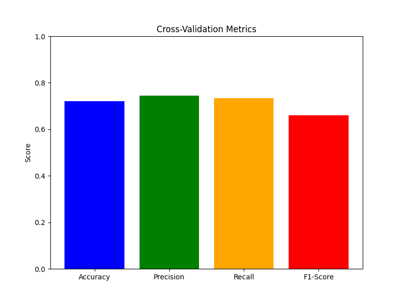

Class: Data 440
Date: 9/26/24
The Patricks_Gradient_Boosted_LWR class I designed implements gradient boosting within the framework of Locally Weighted Regression (LWR).
This class offers flexibility and customization by allowing the user to specify how many boosting iterations they would like to perform
when running the cross_validate function. Additionally, the class gives the user the option to choose from three different standardization techniques:
QuantileScaler, MinMaxScaler, and StandardScaler. These scalers ensure that the data is appropriately
scaled before running the regression models.
n_boosts argument in the cross_validate function. This flexibility
allows the user to decide how much the model should iteratively refine residuals through multiple boosting steps.
cross_validate function lets the user choose between three different data standardization methods:
class Patricks_Gradient_Boosted_LWR:
def __init__(self, kernel=Gaussian, tau=4.0):
self.kernel = kernel
self.tau = tau
self._is_fitted = False # A flag to track if the model is fitted
def fit(self, x, y):
self.xtrain_ = x
self.yhat_ = y
self._is_fitted = True # Set the flag to True after fitting the model
def is_fitted(self):
if not self._is_fitted:
raise ValueError("This Lowess_2 instance is not fitted yet. Call 'fit' with appropriate arguments before using this method.")
def predict(self, x_new):
# Check if the model is fitted
self.is_fitted()
x = self.xtrain_
y = self.yhat_
lm = Ridge(alpha=0.001)
w = weight_function(x, x_new, self.kernel, self.tau)
if np.isscalar(x_new):
lm.fit(np.diag(w) @ (x.reshape(-1, 1)), np.diag(w) @ (y.reshape(-1, 1)))
yest = lm.predict([[x_new]])[0][0]
else:
n = len(x_new)
yest_test = []
for i in range(n):
lm.fit(np.diag(w[:, i]) @ x, np.diag(w[:, i]) @ y)
yest_test.append(lm.predict(x_new[i].reshape(1, -1)))
return np.array(yest_test).reshape(-1, 1)
def boosted_lwr_more(self, x, y, xnew, n_boosts=3):
model1 = Patricks_Gradient_Boosted_LWR(kernel=Gaussian, tau=0.35)
model1.fit(x, y)
predictions = model1.predict(xnew)
residuals = y - model1.predict(x).ravel()
for i in range(1, n_boosts):
if i % 2 == 0:
model = Patricks_Gradient_Boosted_LWR(kernel=Gaussian, tau=0.35)
else:
model = Patricks_Gradient_Boosted_LWR(kernel=Tricubic, tau=0.23)
model.fit(x, residuals)
predictions += model.predict(xnew)
residuals -= model.predict(x).ravel()
return predictions
def cross_validate(self, X, y, scaling_method='standard', kfold_splits=10, seed=42, boost_rounds=3):
if scaling_method == 'minmax':
scaler = MinMaxScaler()
elif scaling_method == 'quantile':
scaler = QuantileTransformer(n_quantiles=900)
else:
scaler = StandardScaler()
mse_lwr_results = []
mse_xgb_results = []
kfold = KFold(n_splits=kfold_splits, shuffle=True, random_state=seed)
xgb_model = XGBRegressor(objective='reg:squarederror', n_estimators=100, reg_lambda=20, alpha=1, gamma=10, max_depth=7)
for train_idx, test_idx in kfold.split(X):
X_train = X[train_idx]
y_train = y[train_idx]
y_test = y[test_idx]
X_test = X[test_idx]
X_train = scaler.fit_transform(X_train)
X_test = scaler.transform(X_test)
y_pred_lwr = self.boosted_lwr_more(X_train, y_train, X_test, n_boosts=boost_rounds)
xgb_model.fit(X_train, y_train)
y_pred_xgb = xgb_model.predict(X_test)
mse_lwr_results.append(mean_squared_error(y_test, y_pred_lwr))
mse_xgb_results.append(mean_squared_error(y_test, y_pred_xgb))
print(f'The Cross-validated Mean Squared Error for Locally Weighted Regression is: {np.mean(mse_lwr_results)}')
print(f'The Cross-validated Mean Squared Error for XGBRegressor is: {np.mean(mse_xgb_results)}')
The following examples demonstrate the application of the Patricks_Gradient_Boosted_LWR class, which implements locally weighted regression (LWR) enhanced with gradient boosting. By leveraging multiple iterations of model fitting on residuals and choosing the appropriate scaling method, we aim to show how LWR can perform competitively against models like XGBoost.
In these examples, we compare the performance of LWR with gradient boosting using three different data scaling techniques: StandardScaler, MinMaxScaler, and QuantileScaler. Each standardization method affects how the model weights and processes the data, influencing its predictive accuracy. We will show how the results differ and, in some cases, how LWR can even outperform the XGBoost model when paired with the right scaling technique.
Below, we present the results of cross-validation using the specified scalers, detailing the mean squared error (MSE) for each, along with comparisons to XGBoost. These examples illustrate the effectiveness of gradient boosting in locally weighted regression and highlight the importance of selecting an appropriate scaling method for optimal performance.
model.cross_validate(X, y, 'standard', kfold_splits=10, boost_rounds=3)When performing cross-validation using StandardScaler, we observe that the locally weighted regression (LWR) model performs significantly worse compared to the XGBoost model.
The results are as follows:
This indicates that StandardScaler is not ideal for locally weighted regression in this scenario, as it leads to much higher errors. Meanwhile, the XGBoost model, which uses gradient boosting decision trees, is less affected by scaling and performs consistently better.
This suggests that while locally weighted regression can benefit from gradient boosting, choosing the right scaler is crucial to achieving competitive results with models like XGBoost.
model.cross_validate(X, y, 'minmax', kfold_splits=10, boost_rounds=3)When using MinMaxScaler for cross-validation, the results for the locally weighted regression (LWR) model are even worse compared to XGBoost.
The results are as follows:
In this case, the MinMaxScaler performs poorly for locally weighted regression, leading to the highest Mean Squared Error (MSE) among the scalers. The XGBoost model, on the other hand, maintains its performance with a much lower MSE, showing that tree-based models like XGBoost are less sensitive to scaling methods.
These results highlight that choosing the appropriate scaling method is crucial for locally weighted regression, especially when competing with models like XGBoost.
model.cross_validate(X, y, 'quantile', kfold_splits=10, boost_rounds=3)When using QuantileScaler with this set of parameters—kfold_splits=10, and boost_rounds=3—the locally weighted regression (LWR) model outperforms XGBoost in terms of Mean Squared Error (MSE).
The results are as follows:
This performance boost can be attributed to the specific gradient boosting parameters used during training. For each boosting iteration, the following parameters were applied:
for i in range(1, n_boosts):
if i % 2 == 0:
model = Patricks_Gradient_Boosted_LWR(kernel=Gaussian, tau=0.35)
else:
model = Patricks_Gradient_Boosted_LWR(kernel=Tricubic, tau=0.23)
In this gradient boosting scheme, the model alternates between using a Gaussian kernel with tau=0.35 and a Tricubic kernel with tau=0.23 for each boosting iteration. By alternating between these two kernel functions, the model successfully refines its predictions on the residuals at each stage.
With the use of QuantileScaler and these specific kernel parameters, the locally weighted regression model is able to reduce its Mean Squared Error below that of the XGBoost model. This result emphasizes the power of combining the right scaling technique with an effective gradient boosting strategy.
In this section, we will compare two different approaches to locally weighted regression using the well-known Iris dataset from sklearn. This dataset contains 150 samples of iris flowers, with three different species as the target variable. Our goal is to classify these species using locally weighted regression techniques.
We will compare my custom Patricks_LWLR class, which implements locally weighted logistic regression, and the Calvin Chi's Locally Weighted Logistic Regression method, both applied to the Iris dataset. However, these two methods handle the classification problem differently due to the multiclass nature of the target variable.
My Patricks_LWLR class uses a Softmax approach to predict all three classes in the target variable at once. This allows the model to assign probabilities to each class for every data point, providing a complete multiclass classification in a single run.
On the other hand, Calvin Chi's locally weighted logistic regression method is designed specifically for binary classification. To handle the multiclass nature of the Iris dataset, we run his method twice: first, comparing the first class in the target variable to the second class, and then comparing the first class to the third class. This binary classification approach allows us to break down the multiclass problem into a series of binary comparisons.
By comparing these two approaches on the Iris dataset, we will explore the strengths and limitations of each method when applied to the same dataset, particularly in how they handle multiclass classification differently. The results will showcase how Patricks_LWLR handles the full multiclass problem with Softmax, while Calvin Chi's method tackles it through iterative binary classification comparisons.
The Patricks_LWLR class is a custom implementation of locally weighted logistic regression designed to handle multiclass classification problems. This model applies logistic regression with weighting based on a kernel function, which determines the contribution of training points based on their distance from the prediction point. The model is flexible, allowing the user to specify the kernel type, the tau parameter (which controls the bandwidth of the kernel), and the number of target classes.
The class features a powerful cross_validate method that allows users to evaluate the model through cross-validation. The user can select a scaling method (Standard, MinMax, or Quantile), specify the number of cross-validation folds, and choose whether or not to visualize the results with a 2D PCA scatter plot. During cross-validation, key metrics such as accuracy, precision, recall, and F1-score are computed, and visualizations such as confusion matrices and bar charts help assess the model's performance.
class Patricks_LWLR:
def __init__(self, kernel=Gaussian, tau=4.0, num_classes=3):
self.kernel = kernel
self.tau = tau
self.num_classes = num_classes
def fit(self, x, y):
self.xtrain_ = np.array(x)
self.ytrain_ = np.array(y)
def predict(self, x_new):
x = np.array(self.xtrain_)
y = np.array(self.ytrain_)
lm = LogisticRegression(multi_class='multinomial', solver='lbfgs', C=1e-3)
w = np.array(weight_function(x, x_new, self.kernel, self.tau))
if np.isscalar(x_new):
weighted_x = x * w[:, None]
lm.fit(weighted_x, y)
yest = lm.predict([[x_new]])[0]
else:
n = len(x_new)
yest_test = []
for i in range(n):
weighted_x = x * w[:, i][:, None]
lm.fit(weighted_x, y)
yest_test.append(lm.predict(x_new[i].reshape(1, -1)))
return np.array(yest_test).reshape(-1, 1)
def cross_validate(self, X, y, scaling_method='standard', kfold_splits=5, seed=42, visualize_pca=False):
y = np.array(y).astype(int).ravel()
if scaling_method == 'minmax':
scaler = MinMaxScaler()
elif scaling_method == 'quantile':
scaler = QuantileTransformer(n_quantiles=900)
else:
scaler = StandardScaler()
accuracy_results = []
precision_results = []
recall_results = []
f1_results = []
y_true_all = []
y_pred_all = []
kfold = KFold(n_splits=kfold_splits, shuffle=True, random_state=seed)
for train_idx, test_idx in kfold.split(X):
X_train = X[train_idx]
y_train = y[train_idx]
y_test = y[test_idx]
X_test = X[test_idx]
X_train = scaler.fit_transform(X_train)
X_test = scaler.transform(X_test)
self.fit(X_train, y_train)
y_pred = self.predict(X_test).ravel()
y_true_all.extend(y_test)
y_pred_all.extend(y_pred)
accuracy = accuracy_score(y_test, y_pred)
precision = precision_score(y_test, y_pred, average='macro')
recall = recall_score(y_test, y_pred, average='macro')
f1 = f1_score(y_test, y_pred, average='macro')
accuracy_results.append(accuracy)
precision_results.append(precision)
recall_results.append(recall)
f1_results.append(f1)
print(f'Average Accuracy: {np.mean(accuracy_results):.4f}')
print(f'Average Precision: {np.mean(precision_results):.4f}')
print(f'Average Recall: {np.mean(recall_results):.4f}')
print(f'Average F1-Score: {np.mean(f1_results):.4f}')
self.plot_confusion_matrix(np.array(y_true_all), np.array(y_pred_all))
self.plot_metrics_bar(accuracy_results, precision_results, recall_results, f1_results)
if visualize_pca:
self.visualize_pca_2d(X, y_true_all, y_pred_all)
return {
'accuracy': np.mean(accuracy_results),
'precision': np.mean(precision_results),
'recall': np.mean(recall_results),
'f1_score': np.mean(f1_results)
}
def plot_confusion_matrix(self, y_true, y_pred):
cm = confusion_matrix(y_true, y_pred)
disp = ConfusionMatrixDisplay(confusion_matrix=cm)
disp.plot(cmap='Blues')
plt.title("Confusion Matrix")
plt.show()
def plot_metrics_bar(self, accuracies, precisions, recalls, f1_scores):
metrics = ['Accuracy', 'Precision', 'Recall', 'F1-Score']
avg_metrics = [np.mean(accuracies), np.mean(precisions), np.mean(recalls), np.mean(f1_scores)]
plt.figure(figsize=(8, 6))
plt.bar(metrics, avg_metrics, color=['blue', 'green', 'orange', 'red'])
plt.ylim(0, 1)
plt.title("Cross-Validation Metrics")
plt.ylabel("Score")
plt.show()
def visualize_pca_2d(self, X, y_true, y_pred):
pca = PCA(n_components=2)
X_2d = pca.fit_transform(X)
plt.figure(figsize=(8, 6))
plt.scatter(X_2d[:, 0], X_2d[:, 1], c=y_true, cmap='viridis', marker='o', label='True Labels', alpha=0.6)
plt.scatter(X_2d[:, 0], X_2d[:, 1], c=y_pred, cmap='cool', marker='x', label='Predicted Labels', alpha=0.6)
plt.title('PCA Visualization: True vs Predicted Labels')
plt.xlabel('Principal Component 1')
plt.ylabel('Principal Component 2')
plt.legend(loc='best')
plt.show()
By running the cross_validate method, users can assess the performance of Patricks_LWLR on multiclass classification problems. The method supports flexible scaling options, allows for custom cross-validation settings, and includes the option to visualize results using PCA.
The Patricks_LWLR class includes several functions that work together to perform locally weighted logistic regression for multiclass classification. Each function plays a crucial role in the overall functionality of the model, from fitting the data to making predictions, performing cross-validation, and visualizing results.
This is the constructor function for the Patricks_LWLR class. It initializes the model by specifying the kernel (default is Gaussian), the tau parameter (which controls the bandwidth of the kernel), and the number of target classes. These parameters define the behavior of the model when making predictions.
The fit function trains the model by storing the feature matrix x and target variable y as class attributes.
The function converts the input arrays into NumPy arrays for easier manipulation in the subsequent steps. This function does not perform actual logistic regression training
but prepares the data for the predict function to be run.
The predict function makes predictions for new data points x_new using logistic regression with local weighting. The function first
computes the weights for each training sample based on the distance between the training data and the new data points, using the specified kernel function and the
tau parameter. The weights are then applied to the training data before fitting a logistic regression model. If a scalar value is provided for x_new,
the function makes a prediction for that single point; otherwise, it predicts for multiple points.
The cross_validate function evaluates the model’s performance using cross-validation. It allows users to:
The function computes key classification metrics—accuracy, precision, recall, and F1-score—for each fold, aggregates the results, and displays the average scores. It also generates visualizations such as confusion matrices and bar charts showing the model’s performance across all folds.
The plot_confusion_matrix function generates and displays a confusion matrix, which visually represents how well the model’s predictions match the true labels. The matrix shows the number of correct and incorrect predictions for each class. The plot helps users understand where the model is performing well and where it is misclassifying.
The plot_metrics_bar function creates a bar chart to visualize the average accuracy, precision, recall, and F1-score across all cross-validation folds. This chart provides an easy way to compare the model’s performance on different metrics and identify areas where it excels or needs improvement.
The visualize_pca_2d function reduces the dimensionality of the input data using Principal Component Analysis (PCA) and creates a scatter plot to visualize the true and predicted labels in 2D space. This visualization helps users intuitively understand how well the model is separating the different classes and where it may be making errors. True labels and predicted labels are displayed in different colors and markers for easy comparison.
# Example usage of cross_validate method
metrics = model.cross_validate(X, y, scaling_method='quantile', kfold_splits=5, visualize_pca=True)
print(metrics)
In this example, the user runs cross-validation with QuantileScaler, using 5 cross-validation folds and enabling PCA visualization. The method returns key classification metrics and displays visualizations to help evaluate model performance.
The following results showcase the performance of the Patricks_LWLR model using a Tricubic kernel and tau=4.0 on the Iris dataset. The model was evaluated using 5-fold cross-validation, with PCA visualization enabled. The key performance metrics are as follows:
The confusion matrix from the cross-validation results is displayed below:
The following bar chart visualizes the average metrics across all cross-validation folds:
The PCA plot below shows a 2D visualization of the true and predicted labels after applying Principal Component Analysis (PCA) on the Iris dataset:
# Example of running the Patricks_LWLR model with Tricubic kernel and tau=4.0
ModelLWLR = Patricks_LWLR(kernel=Tricubic, tau=4.0, num_classes=3)
ModelLWLR.cross_validate(x, y, kfold_splits=5, visualize_pca=True)
The code above demonstrates how the Patricks_LWLR model was run with the specified parameters and evaluated using
5-fold cross-validation. The visualize_pca=True option was enabled to generate 2D PCA plots for visualizing the
separation between the true and predicted classes.
The following implementation of Chi's Locally Weighted Logistic Regression demonstrates how binary classification is applied to the Iris dataset. Since this implementation handles only binary classification targets, we run two different versions:
Both versions of the model utilize Principal Component Analysis (PCA) for dimensionality reduction, allowing us to visualize the decision boundary in 2D space. Each target set is processed independently, applying locally weighted logistic regression with Gaussian weights.
class_mapping = {'Setosa': 0, 'Versicolor': 1, 'Virginica': 2}
flowers['variety_int'] = flowers['variety'].map(class_mapping)
data_sv = flowers[flowers['variety_int'].isin([0, 1])]
feature_columns = ['sepal.length', 'sepal.width', 'petal.length', 'petal.width']
X_sv = data_sv[feature_columns].values
y_sv = data_sv['variety_int'].values
data_svi = flowers[flowers['variety_int'].isin([0, 2])]
label_mapping = {0: 0, 2: 1}
data_svi['label'] = data_svi['variety_int'].map(label_mapping)
X_svi = data_svi[feature_columns].values
y_svi = data_svi['label'].values
pca_sv = PCA(n_components=2)
X_sv_pca = pca_sv.fit_transform(X_sv)
pca_svi = PCA(n_components=2)
X_svi_pca = pca_svi.fit_transform(X_svi)
class locally_weighted_logistic_regression(object):
def __init__(self, tau, reg=0.0001, threshold=1e-6):
self.reg = reg
self.threshold = threshold
self.tau = tau
self.theta = None
def weights(self, x_train, x):
sq_diff = (x_train - x) ** 2
norm_sq = sq_diff.sum(axis=1)
return np.exp(-norm_sq / (2 * self.tau ** 2))
def logistic(self, x_train):
return 1 / (1 + np.exp(-x_train.dot(self.theta)))
def train(self, x_train, y_train, x):
self.w = self.weights(x_train, x)
self.theta = np.zeros(x_train.shape[1])
gradient = np.ones(x_train.shape[1]) * np.inf
while np.linalg.norm(gradient) > self.threshold:
h = self.logistic(x_train)
gradient = x_train.T.dot(self.w * (y_train - h)) - self.reg * self.theta
D = np.diag(-self.w * h * (1 - h))
H = x_train.T.dot(D).dot(x_train) - self.reg * np.identity(x_train.shape[1])
self.theta -= np.linalg.inv(H).dot(gradient)
def predict(self, x):
return int(self.logistic(x.reshape(1, -1)) > 0.5)
def plot_lwlr(x_train_full, y_train_full, x_train_pca, y_train, tau, res, pca_transformer):
lwlr = locally_weighted_logistic_regression(tau)
x_min, x_max = x_train_pca[:, 0].min() - 1, x_train_pca[:, 0].max() + 1
y_min, y_max = x_train_pca[:, 1].min() - 1, x_train_pca[:, 1].max() + 1
xx, yy = np.meshgrid(np.linspace(x_min, x_max, res), np.linspace(y_min, y_max, res))
cmap_light = ListedColormap(['#FFAAAA', '#AAFFAA'])
cmap_bold = ListedColormap(['#FF0000', '#00FF00'])
pred = np.zeros(xx.shape)
for i in range(xx.shape[0]):
for j in range(xx.shape[1]):
x_point_pca = np.array([xx[i, j], yy[i, j]])
x_original = pca_transformer.inverse_transform(x_point_pca)
lwlr.train(x_train_full, y_train_full, x_original)
pred[i, j] = lwlr.predict(x_original)
plt.figure()
plt.pcolormesh(xx, yy, pred, cmap=cmap_light, shading='auto')
plt.scatter(x_train_pca[:, 0], x_train_pca[:, 1], c=y_train, cmap=cmap_bold, edgecolor='k')
plt.xlabel("Principal Component 1")
plt.ylabel("Principal Component 2")
plt.title(f"Locally Weighted Logistic Regression (tau={tau})")
plt.show()
# Set parameters
tau = 0.5
res = 100
The code demonstrates Chi's implementation of locally weighted logistic regression for the binary target variable, using different comparisons between flower species in the Iris dataset. By running the model twice—once for Setosa vs Versicolor and once for Setosa vs Virginica— we handle the binary classification problem effectively. The PCA plots visualize the decision boundary for the different classifications.
The following plot shows the decision boundary for Locally Weighted Logistic Regression on the Setosa vs Versicolor classes.
The following plot shows the decision boundary for Locally Weighted Logistic Regression on the Setosa vs Virginica classes.
x_train_full = X_sv
y_train_full = y_sv
x_train_pca = X_sv_pca
y_train = y_sv
plot_lwlr(x_train_full, y_train_full, x_train_pca, y_train, tau, res, pca_sv, filename='setosa_vs_versicolor.png')
x_train_full = X_svi
y_train_full = y_svi
x_train_pca = X_svi_pca
y_train = y_svi
plot_lwlr(x_train_full, y_train_full, x_train_pca, y_train, tau, res, pca_svi, filename='setosa_vs_virginica.png')
The above plots visualize the decision boundaries created by Locally Weighted Logistic Regression on the Iris dataset, focusing on the binary classification problems of Setosa vs Versicolor and Setosa vs Virginica. The model utilizes a tau value of 0.5 and PCA to reduce the features to two principal components for visualization.
Overall, my implementation of Locally Weighted Logistic Regression proved to be more effective for the Iris dataset since it can handle all three classes in a single run. By incorporating multiclass prediction, combined with strong performance metrics, my model offers a better solution for datasets with multiple categories. On the other hand, while Chi’s model performs well for binary classification, it’s more limited in this context because it requires multiple runs and can’t predict all classes simultaneously. For this specific task, my approach outperforms Chi’s model in terms of both versatility and efficiency.